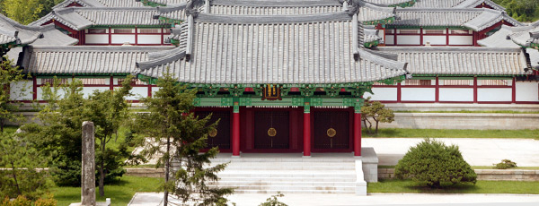
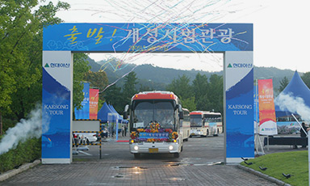

알아보기
역사가 살아 숨 쉬는 개성
고려 500년 역사의 문화 유산인
개성의 다양한 정보들을 소개해 드립니다.
개성소개
고려 500년의 역사가 살아 숨쉬는 개성
개성은 고려500년의 역사가 살아있는 역사문화유적의 도시로 서울에서 불과 70km 밖에 떨어져 있지 않은 가장 가까운 북측도시로써 서울에서 1시간 30분이면 도착할 수 있습니다.
선죽요, 고려성균관, 박연폭포 등의 다양한 역사유적과 명승지를 경험해보세요.
개성? 그곳은 어떤 곳일까요?
개성 약 1,309㎢의 면적으로 북측 황해북도에 위치한 고려(918~1392)의 도읍지로 문화유적이 많은 도시입니다.
휴전선을 사이에 두고 남측의 파주, 연천 등과 접하고 있으며, 한강을 사이에 두고는 김포와 인천(강학도)를 마주하고 있습니다.
개성에는 몇만명의 주민이 생활하고 있을까요?
2002년까지만 해도 개성시, 판문군, 개풍군, 장풍군을 합하여 개성직할시 였으나, 2002년 개성공업지구(개성공단)가 만들어 지면서 개성직할시 체제는 없어지고, 현재는 개성시, 개풍군, 장풍군으로 나누어져 있습니다. 현재 개성시자기에는 약 40만 여명의 주민이 생활하고 있습니다.

고려 500년의 수도
우리 문화재가 풍부하게 남아있는 문화유산의 보고
개성관광은 매우 특별한 의미가 있습니다.
- 최초로 육로를 통한 북측의 역사, 문화 유적지와 명승지를 관광함으로써 남북교류와 통일 기반 조성
- 개성공단사업과 연계하여 민족화해와 협력의 활성화
개성 Tour History
1998

- 06 故 정주영 명회회장의 소떼 1,001마리와 함께 방북
2000
- 08 故 정몽헌 회장의 김정일 국방위원장의 4차면담 후 7대 합의서 체결
2003
- 06 개성공단 착공식
- 03 개성관광사업 협력사업자 승인(통일부 → 현대아산)
2004
- 12 개성공단 첫 제품 생산
2005
-
08
개성시범관광 3차례 실시
개성시범관광 합의서 체결 - 07 현정은 회장이 김정일 국방위원장 면담 후 백두산 및 개성관광 합의
2007
- 12 개성 본 관광 실시
관광 FAQ
-
개성관광은 관광객 분들께서 원하시는 날짜에 매일(월요일 제외) 출발합니다.
-
개성으로 가는 "개성관광지정수송버스" 가 서울 5곳 (계동, 광화문, 마포구청역, 잠실종합운동장, 압구정동)에서 매일 출발합니다.
-
하루 동안 둘러보는 당일 관광이며 오전에는 박연폭포, 관음사를 관광하시고, 점심을 드신 후 숭양서원, 선죽교, 고려박물관를 관광하실 수 있습니다.
-
개성관광은 금강산관광 대표 대리점을 통해 안내 및 예약 가능합니다. 개성관광 대표 대리점은 www.ikaesong.com > 예약안내 > 대리점 안내에서 확인하실 수 있습니다.
-
개성관광 중 점심식사는 개성의 북측 식당에서 개성 전통 음식인 반상기를 준비할 예정입니다.
-
남북간에 열차 운행은 남북 당국간의 관련 합의 후 가능한 사항으로, 현재로서는 관광버스로만 가능하십니다. 향후 남북간 열차 운행시에는 열차로도 개성까지 갈 수 있도록 준비 예정입니다.